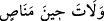

tersine ona “senden başka hiç kimse yapamaz” şeklinde itirâf ettirmektir.
Âyette bahsedilen süre, yakın bir zamandan önceki süreydi. “İnsan” şeklinde yer alan
kelimeden maksad insan cinsidir; yoksa Hz. Âdem değildir. Bundan maksadın insan
cinsi olduğunu ikinci âyette yer alan “nutfe” kelimesinden anlıyoruz. Çünkü Âdem (a.s.)
nutfeden yaratılmamıştı. Öte yandan cins ile kasdedilen Hz. Âdem’in kendi oğulları
olabileceği gibi bütün insanlık da olabilir. İkinci takdirde Hz. Âdem’in oğulları insan
cinsi içerisine “tağlib” yoluyla dâhil olur. Yahut “burada –mecâzen- ba’z kısım
zikredilmiş, kül kasdedilmiştir” diyebiliriz.
Şimdi âyetteki “
/zamandan bir süre” ifâdesini ele alalım. Burada zaman
anlamına kullanılan kelime; “hıyn” kelimesidir. Bu kelime ile, -ister uzun ister kısa-
bütün zamanlar için kullanılması mümkün, belirsiz bir mutlak vakit, belirsiz bir zaman
dilimi kasdedilir.
Müfredât’ın açıklamasına göre; “hıyn” herhangi bir şeyin ulaştığı ve meydana geldiği
vakit demektir. Bu vakit mübhem, belirsiz bir vakittir. Hıyn kelimesi ile hangi vaktin
kasdedildiği “muzâf ileyh”i ile belli olur. Tıpkı; “
/Hâlbuki artık
kurtulma zamanı değildi” (Sâd, 38/3) âyetinde olduğu gibi.
“Hıyn” kelimesini ecel, belli bir süre, meniyye/ölüm, saat, mutlak zaman şeklinde
tefsir eden âlimler, bütün bunları, yaptıkları dil araştırması neticesinde bu kelimeye
izâfe edilen kelimeler yardımıyla bulmuşlardır.
Arapçada “dehr” uzun zaman demektir. Buraya kadar yaptığımız açıklamaların ışığı
altında âyet-i kerîmenin mânâsı; “insanın üzerinden, henüz kendisinin anılmaya değer
bir şey olmadığı uzayıp giden bir zaman dilimi geçti” demek olur. Bu süre, insanoğlunun
ana karnında kaldığı dokuz aylık süredir. Bu süre kişinin ana karnında yer almasıyla
başlar ve -İbn Abbas (r.a.)’nın kanâati üzere- zikredilen bir şey oluncaya kadar devam
eder.
Âyetteki “
” cümlesi yukarda geçen “hıyn” kelimesinin sıfatıdır.
İnsanoğlu o dönemde anılmaya değer hiçbir şey değildi. Hattâ insan olarak asla
anılmayan unutulmuş bir “şey” idi. Babalarının sulbünde bir “nutfe” idi. İnsanoğlunun
“nutfe” hâlinde bulunması ile “insan olarak anılmaya değer bir yaratık” olması arasında
belli sınırlı bir zaman süreci vardır. Aynı insanoğlunun “âlemu’l-ervahta/ruhlar
âleminde” geçirmiş olduğu bir ön dönemin olması, insanın bedenlenmediği ve cisimler
âlemine çıkmadığı sürece yaratılışta “anılmaya değer bir şey olması”nı gerektirmez.
Rivâyet olunur ki; ya Hz. Ebû Bekir es-Sıddık ya da Hz. Ömer (r.a.), bir kişinin bu
âyet-i kerîmeyi okuduğunu işitir. Bunu işiten Ebû Bekir veya Ömer ağlamaya başlar ve
şöyle der: “Keşke bu noktada tamam olsaydı.” Bu ifâdesiyle o, insanın “anılmaya değer
bir şey olmadığı” dönemde kalmasını, yaratılmamasını ve yükümlülüklerle mükellef
tutulmamasını temennî ediyordu.
Bu âyetteki istifhâmın “istifhâm-ı takriri” olup öldükten sonra dirilmeyi inkâr eden
kimseyi bunu ikrara yönelttiğini söylemiştik. Burada Allah Teâlâ âyete muhâtap olan